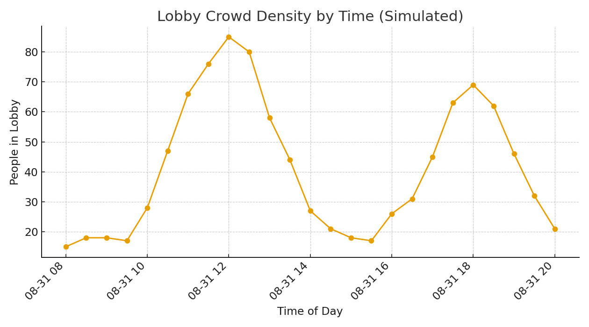
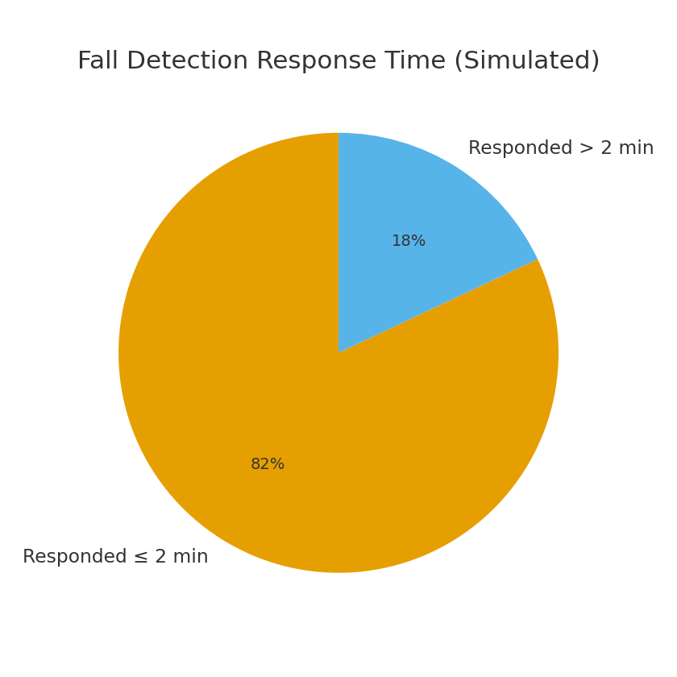
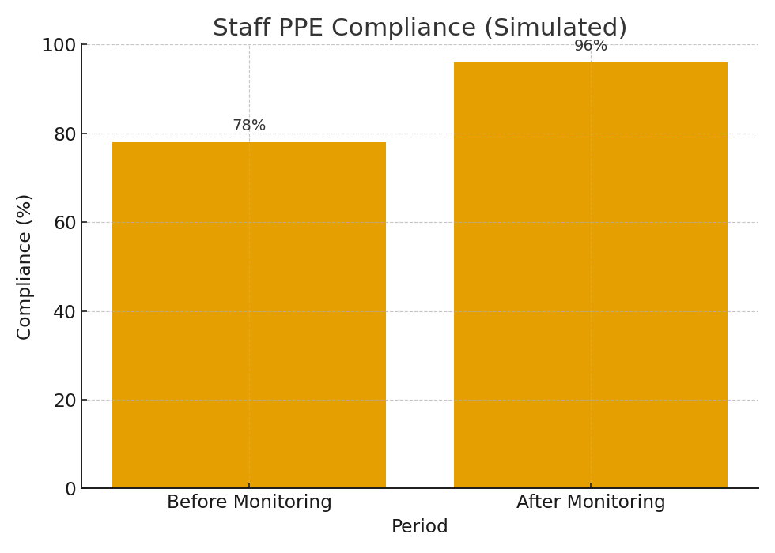
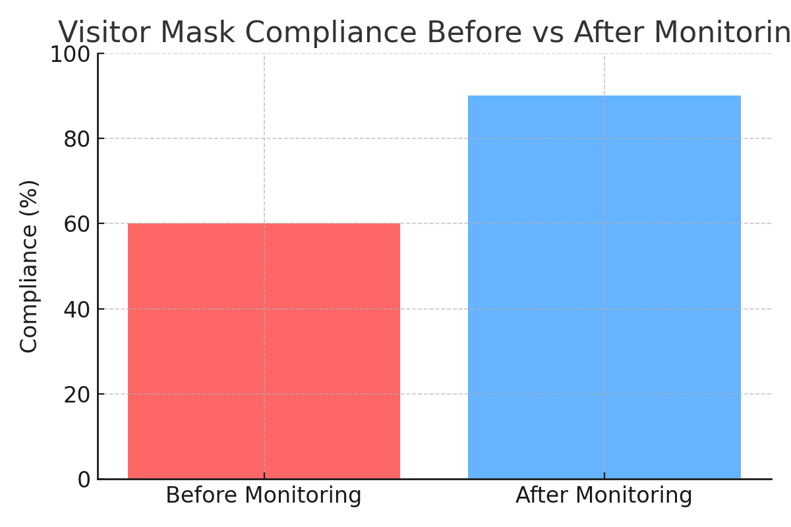

Client Profile
A large private hospital in India with multiple specialty departments, 300+ beds, ICU units, and daily footfall of patients, visitors, and staff.
Business Challenges
- Hospital lobby overcrowded during OPD hours made patient management difficult.
- No real-time system to detect patient/visitor fainting or falls.
- Ensuring staff PPE (masks, gowns, gloves) compliance in ICU/OT zones.
- Visitors sometimes entered ICU without masks, increasing infection risk.
- Management required proof of safety compliance for audits and accreditation.
AI Solutions Implemented
Crowd Density & People Counting
Real-time counting in lobby, OPD halls, and corridors. Heatmaps optimized staffing and space.
Fall Detection in Public Areas
AI detects sudden falls & sends instant alerts to staff, reducing emergency response times.
PPE Monitoring (Staff)
AI ensures doctors, nurses, and staff wear PPE inside ICU/OT/nursing zones.
Mask Compliance for Visitors
System checks mask usage in ICU/public zones; can be enabled per hospital policy.
Key Findings (Demo Insights)
- Lobby density peaked between 9–11 AM and 6–8 PM.
- Fall detection reduced incident response time by over 50%.
- PPE compliance improved from 78% → 96%.
- Visitor mask compliance improved by 30%.




Business Benefits
- Improved patient safety with faster response to falls.
- Stronger infection control through PPE and visitor mask monitoring.
- Operational efficiency by optimizing staff allocation.
- Accreditation-ready reports for NABH/JCI audits.
- Cost-effective as it works with existing CCTV infrastructure.
Next Steps for Hospitals
- Begin with lobby + ICU monitoring, then expand coverage.
- Integrate alerts with hospital security app or WhatsApp group.
- Leverage reports for monthly management and compliance audits.